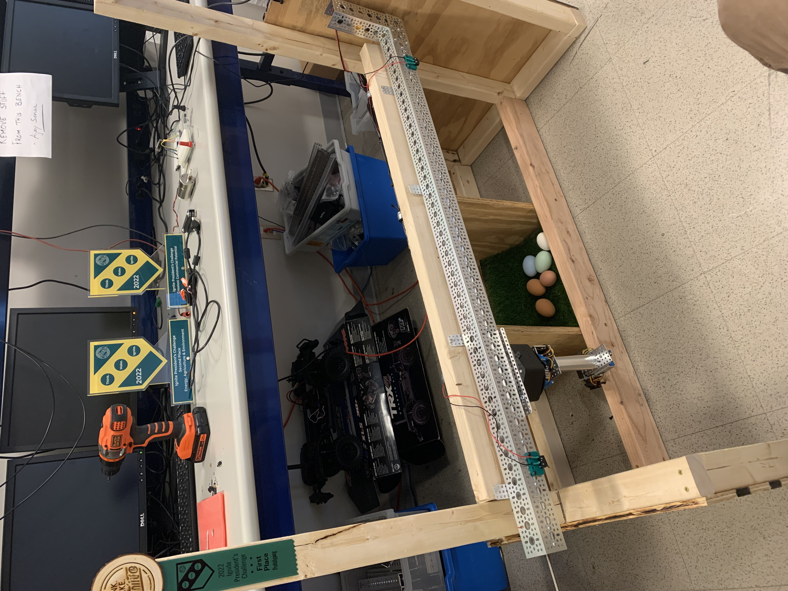

Projects:
Gimbal-based CubeSat Attitude Control Emulation Platform-
In Clarkson University's ASTRO Lab, I developed an emulation platform for small satellites. This platform is unique - as it is capable of undergoing continuous rotation about all three axes as well as being compatible with a variety of CubeSat actuation methods. This platform was presented at the AIAA SciTech 2024 Forum, and the conference paper can be found here.. More information will be available in the future!
Predicting SST w/. Coupled RCs-
Developed a coupled reservoir computing model to predict changes in sea surface temperature across the globe as an undergraduate researcher in Chaos Lab. This involved a large number of coupled reservoir computers which are each trained over a discretized region accounting for local coastline irregularities. Our model capitalizes on the minimal training required by the RCs, as typical machine learning models are not able to forecast over large domains and one must defer to numerical methods. Closed loop and open loop forecasting was performed. The project was implemented in MATLAB and is uploaded to GitHub here and the publication can be found here.
ELM Logic Gates-
Another project I was involved with in Chaos Lab was the use of extreme learning machines as logical operators. It has been shown that a single perceptron (which is a simplified model of a neuron) can operate as a logic gate, therefore our work with ELMs is to explore if a layer of perceptrons with randomly chosen input weights can be weighted properly such that they function as logical operators that account for additive noise.
We then use our trained ELM logic gates to provide the computational power for a game of tic-tac-toe and Conway's Game of Life, the latter requiring a 9 input 1 output combinational logic circuit. The model was implemented with a combination of Simulink and MATLAB. A short paper on the matter can be found here , and the tic-tac-toe model is available here.

Automated Chicken Coop-
For Clarkson’s President’s Challenge (which is a semester long competition held at the school for all students to participate in), I was a member of a team consisting of several undergraduates that attempted to fully automate a chicken coop. The functions which the coop was intended to perform included: automatic egg harvesting, thermal control, automatic feeding, monitoring of toxic gases, and the opening of the door.

The eggs are identified with a camera, which has an algorithm using OpenCV that identifies when an egg is present and what the location of the egg is, which is then used to guide the arm to the location of the egg. Everything was ultimately controllable from an online IO server, allowing one to automate all of the duties which one would typically carry out with a chicken coop and more. My role on the team has involved the following: general development of the software on the Raspberry Pi, conifiguration and interfacing of the hardware (e.g., motor drivers, limit switches) with the Pi, and the design and 3D printing of various parts (e.g., brackets, mounts, etc.).
We were ultimately able to win several monetary awards for the project, including best prototype and most commercially viable product. A YouTube video of the project can be found here
Drone Charging Platform-
For Clarkson University's Integrated Design courses ME445 and ME446, my group created a docking station for quadcopters/drones to land and charge without any physical human interaction. This was intended to be positioned on top of off-shore wind turbines for fully remote structural inspection. The drone operator lands the drone on 4 rods, 2 of which are power carrying - and 1 control signal.
The control signal is intended to go to a custom piece of hardware in the drone which disconnects the battery from the drone electronics and connects it to our charging apparatus. Ultrasonic sensors are deployed on the base to detect when the drone has landed, which then triggers a clock that allows the drone to cool down before supplying power.
SOS Optimization to Numerically Find Lyapunov Functions-
For the graduate optimization course ME543, I wrote a brief paper on the use of sum-of-square optimization to numerically find the Lyapunov function for dynamical systems. The paper can be found here.
ME544 Final Project-
For the graduate CAD course ME544, Muneeb and I chose to model a Lego Lunar Rover in Creo Paramteric then make an animation using 3DS MAX. Please watch the video below!
Lawn Rover-
As a side project outside of school, I began to prototype a robot which would travel randomly around one’s yard and cut down weeds if it detected one.

The rover itself goes in a straight line until the positional ultrasonic sensor detects an object in it’s path, which tells the rover to make a slight turn (as seen with typical Arduino "self-driving" cars). Hence the cart will randomly go around one’s yard, given that the yard is enclosed by a solid boundary. There is an array of ultrasonic sensors positioned at the front of the rover which is designed to detect is there is a surface anomaly such as a weed, which will then signal to the robot to stop and cut the weed down with a downward facing DC motor. The robot will then proceed until it finds another weed. The code is uploaded to GitHub here.
Telescope Computerization-
As another side project, I attempted to control and view the output of my telescope on a laptop.
In order to spin the telescope azimuthally, a stepper motor was employed on the base of the platform. The platform was connected to a stationary block via a turntable tray. The stepper motor was connected to this stationary block with a belt, therefore allowing it to roll along the belt and spin the platform.
Another stepper motor is positioned to lift the telescope in the zenithal direction, which ultimately required a 64:1 planetary gearbox. The motor drivers are connected to an Arduino Uno, which is controlled through a combination of the Arduino IDE and Processing. It is of future interest to encase the electronics into a box that rests on the platform and to make several other major hardware iterations.

The image of the telescope is captured with the use of a smart phone. A clamp was designed such that it allowed one to line their camera up to the eye piece of the telescope. The phone app EpocCam was then used to transmit the image to the computer.
Satellite Dish Control-
As a final project for our controls class EE450, our group was tasked with designing a controller for a satellite dish. This was then to be implemented into a real-life lab apparatus.
The user sets a desired input with the twisting of a potentiometer, which was then sent to a differential amplifier, our controller, a power amplifier, then the DC motor. Another potentiometer was connected to the dish, which was used as a feedback signal. My main focus during the project was the creation of the controller. Using several control theory techniques, I designed a lead-lag controller which was designed to meet the desired specifications (e.g., settling time and percent overshoot).